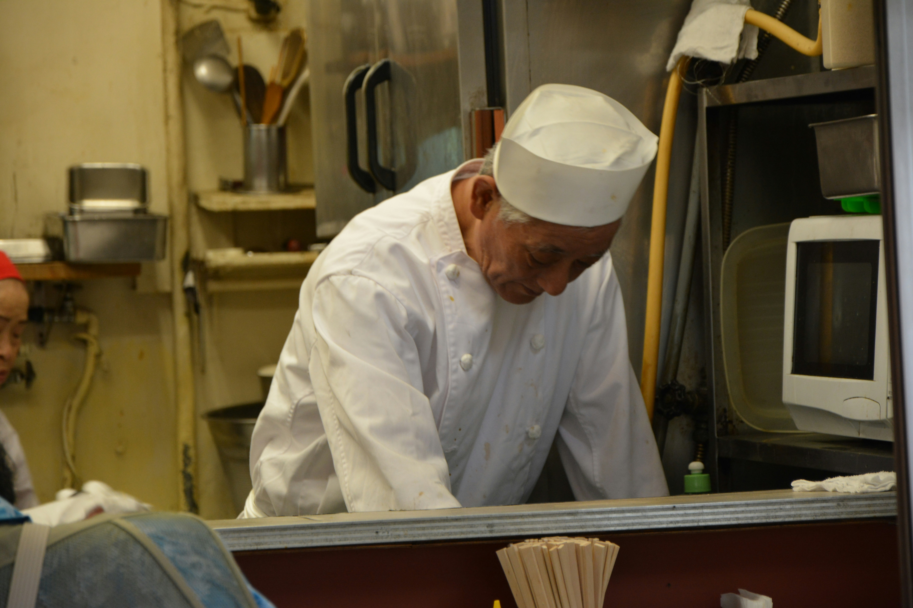
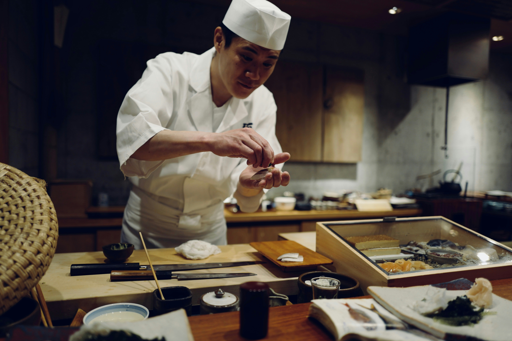
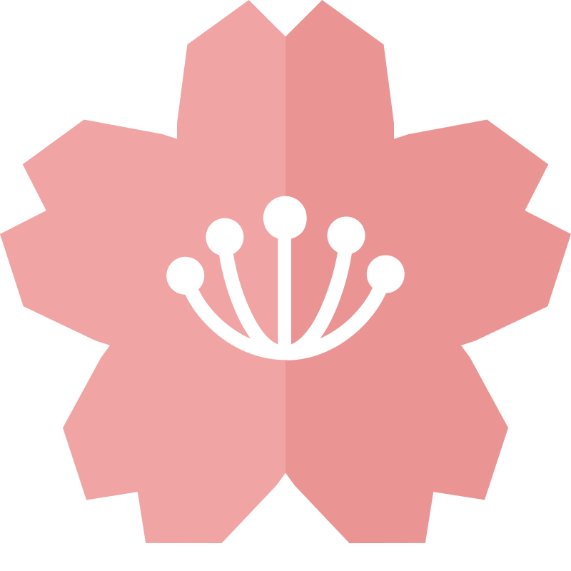

Shoyu Ramen Artesanal
Caldo cozido lentamente por 12 horas, servido com macarrão artesanal, chashu (barriga de porco) e ovo marinado.
De 15 a 21 de Outubro | Pavilhão Cultural de São Paulo
Garantir Participação GratuitaO Omotenashi é a arte da hospitalidade japonesa, onde o cuidado com o convidado é elevado à perfeição. Nesta edição especial da Semana da Cultura Japonesa, convidamos você a uma imersão completa. Mais do que um festival gastronômico, este é um encontro entre o passado e o futuro, trazendo os sabores ancestrais de Kyoto e a energia vibrante da comida de rua de Osaka diretamente para o coração de São Paulo.
Prepare-se para sete dias de oficinas interativas, degustações de chás raros, apresentações de taiko e uma praça de alimentação com mestres culinários premiados.

Mestre em Lamen Tradicional
Trazendo diretamente de Kyoto os segredos de um caldo Tonkotsu envelhecido e aperfeiçoado por três gerações da sua família.

Restaurante Convidado
A autêntica experiência da comida de rua de Osaka. Especialistas em espetinhos Yakitori na brasa e porções de Takoyaki fumegante.

Especialista em Alta Culinária
Estrela em ascensão em Tóquio, a chef Hikaru apresentará uma abordagem moderna e artística para a criação de sushis e sashimis.


| Horário | Atividade / Oficina | Localização |
|---|---|---|
| 14:00 - 15:30 | Oficina: Segredos do Arroz de Sushi perfeito | Sala de Culinária A |
| 16:00 - 17:30 | Cerimônia Tradicional do Chá (Chanoyu) | Tenda Cultural |
| 18:00 - 19:30 | Apresentação de Taiko (Tambores Japoneses) | Palco Principal |
A entrada é gratuita, mas as vagas para as oficinas são limitadas. Preencha seus dados para receber o passaporte digital.